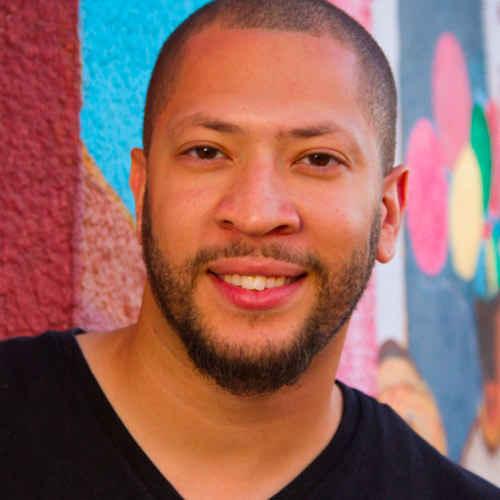
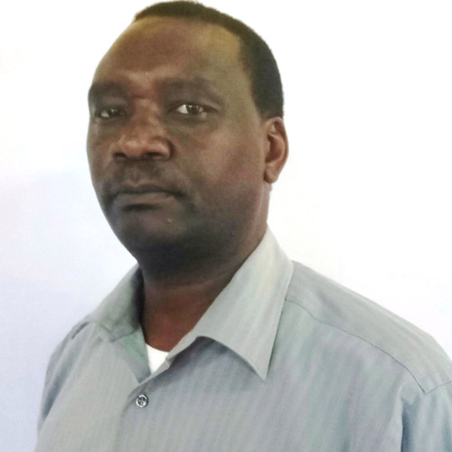

Send Me: Advantages of sending a multi-ethnic team on Mission
Pastor Michael Kelsey: Mclean Bible Church
This workshop takes a look at how to do multiethnic ministry and build multiethnic teams. It also considers the role of multicultural teams in missions. People who are interested in doing multiethnic ministry and building multiethnic teams. A theological vision for multiethnic ministry
Partnership Development: Who is on the team?
Jamie Farr: Wycliffe Bible Translators
What are critical fears faced by most people considering missions? We will highlight a few issues but focus primarily on developing a partnership team and building a biblically focused partnership culture for our church communities. There will be askit outlining the “why” behind partnership development. There will be individual responses followed by small group conversations and then some large group processing.
- Each person will be able to articulate “Why” a partnership model is effective and important when sending a person into global missions.
- Each person will be able to share notes on Biblical rationale for “partnering” rather than “supporting” and how that looks and feels different.
- Each church leader/individual will get recommendations books and article recommendations and some PDF documents that outline philosophy but also practical suggestions as to how to develop a culture of partnership.
- Each person will leave desiring to have deeper relationships with those they partner with.
Overcoming Obstacles
Rev Dr. Virgil Amos: Ambassadors Fellowship
What are the "Vital Issues" in preparation to help you to effectively extend God's kingdom? Do you know where to begin and what to do next? This workshop will help you to establish a firm foundation for your mission principles and practices. It will help you to avoid many pitfalls that are often made by the well-meaning but the uninformed and it will help the experienced mission leader evaluate existing approaches to mission. Once you complete this workshop you will know the vital issues that must be addressed in any mission endeavor. Following the principles taught in this workshop will place you on the road to success and victory in your Christian life and mission ministry. Rev Dr. Virgil Amos, Director of Ambassadors Fellowship specializes in short and long term missions to over 70 nations and will share his experience of 54 years.
How Missions Can Be a Family Affair?
Richard Coleman: TMS Global Missionary
“Are you taking your kids with you?” Believe it or not, this is a common and comical question I receive when telling people about my plans to serve overseas. Perhaps this is because some all-too-often perceive calling in terms of the individual and forget that God calls entire families. Whether we plan to serve locally or internationally, missions can be a family affair. My hope is to inspire others to make missions involvement a family affair and not just something we approach from an individualistic standpoint. We will also look at practical ways to engage the whole family in local and international missions.
How to Organize a Church's Missions Ministry
Joe Steinitz: Unmissions
A discussion of typical problems that confront most missions ministries in churches. Solutions will be offered and creative ideas for solving the complex problems that confront church missions committees. You will have the ability to trouble shoot pressing problems and help a church move forward to better fulfill the purpose God has for them.
Pastors, mission’s committee members and missions committee chair persons, church leaders (elders, deacon, etc.) are welcomed.
The History of African Americans in Missions.
Rev. Dr. Phillip Scott Nelson: Perspectives
The past hindrances and present challenges and opportunities for African American involvement in Global Kingdom Advance.
Clean Hands, Pure Hearts
Kyle Bowman: MA- Women's Ministry Regeneration of Northern Virginia
The Clean Hands, Pure Hearts workshop will cover several areas of sexual and relational brokenness that prevent effective ministry by missionaries and ways to ensure wholeness prior to going to the mission field. You will find the ability to identify areas of life that can contribute to sexual and relational brokenness. Along with the willingness to confess any sexual or relational struggles to a trusted brother or sister in Christ. You will have the ability to provide support and spiritual direction free of condemnation to a fellow brother or sister with sexual or relational struggles. Learn practical ways to maintain sexual and relational integrity.
Medical Missions for Non-Medical Personnel
John Barnshaw: SIM USA Creativity & Health Ministries
I am not a doctor or nurse, how in the world can I do medical missions? Come find out how! I am an engineer not a doctor or nurse. I have had a career before joining SIM. But I have found a place in medical missions, serving the most underprivileged around the world. Some of the things I have been involved with are:
- Development of Teaching Cubes for HIV/AIDS, Malaria and Human Trafficking. All tie to the Evangea Cube.
- HIV/AIDS – “Project Hope” – Rwanda -- “When preaching is not enough.”
- Orality – How to reach people for Christ who come from oral cultures. (This is important for medical professionals to understand.)
- Ebola response – My personal story & short SIM Video “ELWA Hospital - A Ministry of SIM.”
- Medical Provisions: Prosthesis – Leg, Hand and Glasses
Let’s talk together about the ways the Lord is making disciples and building His church through medical ministry teams. You too may find a place there also!
Send Me! Where? Where is the Greatest Need?
Joe Steinitz: Unmissions
If our mandate is to “make disciples of all nations”, we better know which nations have little gospel witness and why. Come take a world tour and find out where the new opportunities are! Anyone considering going into missions short or long term would benefit from this workshop as would those in mission’s leadership at their church or organization. You will better understand why the unreached parts of the world are unreached and what it will take to reach them. Also, they will learn the valuable role those who stay in the US play.
Kingdom Resolve in Our Families
Gladys A. Nelson
This workshop with establish a framework and content for the family’s existence toward Kingdom purposes, along with application points for your daily living. Attendees will grasp a fuller, more robust vision for God’s purpose of the family and will be empowered to promote a flourishing Kingdom family mindset, for God’s glory and Kingdom expansion throughout the earth. This workshop is for everyone, since we are all connected to families.
Send Me: How does the church planting work on the Mission field? Past, Present, Future!
Dr. Bobby Gupta: President & Chairman, Hindustan Bible Institute & College, India and President – HBI Global Partners, USA
Planting churches by mono cultural pastors, mobilizing pastors to equip and enable the local church to multiply churches and build church planting movements. Enabling church planting movements when it is cross-cultural in the context of globalization (bi-vocational missionaries). Missionaries, leaders, mission committee, mission societies will be able to learn how to build church planting movements. You will understand how God worked in different era in building his church. Along, with how God is working in building his church in the 21st century. How can we embrace the current Missional strategy to rapidly multiply churches through the nations?

Send Me: To the nations among Us
Pastor Eric So: The Well Community Church
Refugees are in our cities. Many have very different values, outlooks, and rhythms of life. How can Christians lovingly and effectively create and develop relationships with people who are so different? Come gain a basic understanding of different cultures and practical steps for cross-cultural ministry to take the gospel of grace to the nations in our cities. This will also increase awareness of refugees and unreached people groups in local areas. The workshop will give you the next steps to get involved in moving towards and developing relationships with local refugees. All local mission’s directors, mission-minded disciples, cross-cultural ministers or those interested in it, young adults passionate about racial reconciliation and bridge building, evangelists, service ministries are welcome.
Short Term Missions for Long Term Impact
Dr. Casely B. Essamuah: Global Missions Pastor, Bay Area Community Church
Short term missions has become an avenue for many people to have a first-hand experience of global missions. There’s a lot of good that’s done on short term mission trips. But most people who participate would confess that it can be better. This workshop takes you through some of the best practices for an effective short term mission trips that will have a long term sustainable impact. There are 7 Standards to evaluate your short term mission’s experience. This workshop is for the first-timer as well as the experienced missionary.
Send Me: Single Women Discerning the Missionary Call
Sherry Thomas: SIM USA & Boundless Ministries Inc. Missionary
We will examine the special needs and expectations being a single woman on the foreign mission field. When God calls you, He prepares you and equips you – mind, body, spirit and soul. First and foremost being the standard of God in a dark and depraved world. The dynamics are not the same as for a married woman with children going overseas to serve God. This workshop is designed to get a bigger picture of serving cross culturally to be the most effective for the Kingdom of God – even as a single woman. You will understand your role as a single woman that impacts your service, socially, spiritually, and politically.

Pros and Cons of working with Mission Agencies
Greg Fletcher: Pioneers
We will examine the special needs and expectations being a single woman on the foreign mission field. When God calls you, He prepares you and equips you – mind, body, spirit and soul. First and foremost being the standard of God in a dark and depraved world. The dynamics are not the same as for a married woman with children going overseas to serve God. This workshop is designed to get a bigger picture of serving cross culturally to be the most effective for the Kingdom of God – even as a single woman. You will understand your role as a single woman that impacts your service, socially, spiritually, and politically.

The Call to Make Disciples from the 4 corners of the Block to 4 corners of the Globe
Jahill Richards: Minster of Missions and Mercy – Anacostia River Church
In this workshop we are going to talk about how being a disciple-maker is not an option, it’s a command! Jesus never asked us to “Go make disciples” (Matt. 28:19), He commanded us to! Our Mission: Is the Call to Make Disciples from the 4 corners of the Block to 4 corners of the Globe. We will seek to better understand the great commission and what Jesus demands from His followers. You will receive a biblical understanding of the great commission and the mission of the church.

Send Me: What practical tools can I use to reach oral learners with the gospel?
Grant Lovejoy
You’ll experience methods for sharing the gospel, making disciples, and developing leaders that have proven highly effective with oral learners. You’ll learn how to teach any subject more effectively with the 80% of the world’s population that likes to learn but doesn’t like to read. You will know multiple examples of the effective use of appropriate strategies for oral learners. You will also be able to state what often-used teaching methods to avoid with oral learners and why. You will know what methods work best with oral learners. You will receive handouts telling where to turn for additional resources and more instruction in the use of appropriate strategies for oral learners. Anyone who intends to share the gospel or teach Scripture to transform lives; people who may teach health care, agriculture, parenting, business, and other topics cross-culturally.
Christian Drama on the Mission Field: Bringing the Gospel message to Life!
Elder Don Watson: City of Zion
Definition of Christian Drama, Benefits of Christian Drama, Mechanic of Christian Drama. Who would benefit from taking your workshop? Missionaries seeking an interactive, fresh, approach to reaching the unchurched, unsaved, and edifying the believer for Christ! Which is the blueprint of how to present Christian Drama on the Mission Field and win souls for Jesus Christ!
Handouts will be distributed and a brief skit will be demonstrated during the workshop.
Universal Simplicity & the Creative Nature of God
Jett Edwards: Missionary/Psalmist to Japan
Attend this workshop to gain greater awareness and insight into the use of the creative arts in global ministry and mission. Learn to become a better listener in order to understand God’s plan to use you in His universal vision for the arts. Gain the ability to identify all the tools God has equipped you with to represent Him on a universal platform. Learn to overcome language barriers by discovering a “universal” language used in the arts. Gain a higher and greater respect for other cultures.
Our Greatest Pioneering Opportunity: The Unengaged Unreached!
Mike Latsko: Frontiers USA/Vision 5:9
The unengaged are a subset of the unreached—they are those peoples among whom there are not yet resident workers. 30% of all Hindu unreached, 40% of all Buddhist unreached, and 50% of all Muslim unreached are also unengaged. You will understand the difference between the unreached and the unengaged, along with the major obstacles. You will understand what are the best practice’s leading to new engagements for the individual and corporate next steps.
Why should the African American church not be part of leading the way!
Send Me: Among unengaged Muslim peoples
Michael Fariss
Explores the dynamics of pioneering in God’s work among the most unreached peoples. The workshop identifies “unengaged” peoples in the Muslim world and casts vision for cutting-edge career service among them.
- Awareness: Attendees will gain increased awareness of unengaged peoples and the importance of African
- American leadership in pioneering service among them.
- Receptivity: Attendees will gain receptivity for pioneering among the unengaged peoples in the Muslim word. The workshop will address misconceptions about potential for service.
- Identity: Attendees will gain insights into their identities as Christ’s ambassadors in the Muslim world.
- Action: Attendees will receive opportunities to take action steps to go and send.
Why should the African American church not be part of leading the way!
Send Me: GLOCAL IMPACT
Belynda Gentry
God’s love has no borders and no boundaries. He calls us to “go” to share his love with people in our own backyard and around the world. GLOCAL (global + local) is a term we use as we serve both here and there. Come learn about how this challenge is for the entire church. It is a challenge individually to every disciple of Christ and corporately to the Body of Christ—His Church! You will better understand the importance of both global and local missions. The “why” of churches incorporating missions now more than ever. Sharing various ways of including the masses so that individuals who have a serious missionary calling can discover it. The importance of Missionary Care once they are sent.

The Joy of Reaching the Unreached Tribes in Kenya: True Testimony from last years conference
Bishop Benson Kioni
Biblical teachings to the unreached, Biblical ways of reaching to the unreached, Jesus assurance to the unreached missioners, how to make intercession to the unreached, how to do ministry to the unreached, the resources to reach the unreached, eternal benefits of reaching to the unreached, the need of moving from theories of reaching to the unreached, to practically moving to the field “send me”. One shall also discover whether he/she has been called into reaching to the unreached.
Not Just Learning to Fish, but Owning the Pond
Leslie Englesen: Peer Servants
What are the global issues that break your heart? Trafficking? Hunger? Orphans? Modern day slavery? Material poverty is at the root of many devastating global issues. Christian micro-finance is helping people develop small businesses that empower them to provide education, safe housing, and health care for their families, and transform their communities in the name of Jesus. We can go beyond “teaching people to fish.” They can “own the pond.” Discover how volunteers like you can give your time and talents to strengthen Christian micro-finance organizations around the world right from your home. People with skills and interest in finance, entrepreneurship, IT, communications, prayer to empower our global family.
DeMYTHtifying Missions, Taking Next Steps
Bob Hay and Brittany Gardner
You think you’re ready to go? Are you asking the right questions? Have you counted the cost? What do you need to know? Come find out!
Those who curious will have an opportunity to learn more about what mission involvement is and isn’t. For those thinking about going but aren’t sure of their next step, we’ll discuss ways of thinking and doing that could impact missionary service. For those who are already convinced the Lord is leading them to engage in mission work, it will add to their perspectives as they prepare to serve.
People attending the workshop will have a clearer understandings of “the call,” what makes a missionary, the wisdom of partnering with an agency, and how to know what agency to join.
Going as a Disciple-Maker: Why Discipleship is Crucial?
David Bempong: Director of Discipleship Riverdale Baptist Church
Discipleship is essential! Being a disciple answers the question of what God’s will for one’s life; and discipleship answers the question of what God’s will is for the church. God is at work redeeming people throughout the world. Our mission is clear: make disciples that make disciples. This workshop will lay the foundation for biblical discipleship and provide practical application for accomplishing the Great Commission.
This workshop is for anyone looking who is looking to mobilize people in creating a discipleship movement. This workshop will benefit new believers, Senior Pastors, and everyone in between.
Send Me: So, You Want to be Certified in Cross-cultural
Ron & Star Nelson: Sowing Seeds of Joy
Come join us for an introductory workshop on NAAMC’s certification program. Graduates of the NAAMC Certification Program will earn the designation Certified in either of six specific areas:
- Missions Mobilizer
- Missionary Care
- Creative Arts in Missions
- Short-Term Team Leader
- Human Trafficking
- Trauma Healing
Applicants are required to attend the National African American Missions Conference annually for the duration of the Certification Program.
Send Me: Becoming an Organizational Partner in NAAMC Certification Program
Ron & Star Nelson: Sowing Seeds of Joy
Organizations will have an opportunity to partner up with NAAMC, to collaborate and to share their programs of expertise. To implement elements of the programs in conjunction with their organization. Learn more of what is required for partnership. Come join us as together we answer the call to makes disciples of all nations. scipleship movement. This workshop will benefit new believers, Senior Pastors, and everyone in between.
Mission Possible! Maximize Your Resources to Answer God’s Call
Denison Borges
- What are the advantages of working with a Christian travel provider that specializes in missions?
- What are the financial & administrative advantages of traveling with a mission team of 10 or more?
- What if I want to plan a short-term mission’s trip, but don’t have a contact already in the mission field?
Does Cross Cultural Training Really Matter?
Elder Robert Duhart
This workshop delves into the internal intangible facets of awaking people to the call of Christ.
How people think, understand and makes sense of the World both tangible and intangible is inexplicably tied to their Culture, values, mores, and experiences. So how do you define culture? And, what type of impact does culture have on our work for the Kingdom? What is Cultural competence? What is cross cultural competence? What is intercultural competence?
This workshop will discuss why these concepts are essential to the job that Christ has given us to do.


Healing the Wounds of Trauma at Home and Abroad
Desiree Guyton and Ray Hutchison: SIM USA
“He heals the brokenhearted and binds up their wounds.” Ps. 147:3 (ESV)
“Trauma is the new mission field,” by Dr. Diane Langberg, PH.D
Description: Trauma refers to the psychological and emotional effects of human being experiencing disruptive events like sexual abuse, urban violence, abandonment, domestic violence and etc. This interactive and scripture engaging workshop will give a brief overview of trauma and how the church can be a healing community at home and abroad. The workshop introduces participants to a program that uses biblical and mental health techniques that allows traumatized people to experience the life changing message of the bible. Trauma Healing Institute serves the world’s largest people group overseas and in the United States. “1 in 7 people have experienced trauma that prevents them from encountering God in the Bible,” – American Bible Society Website